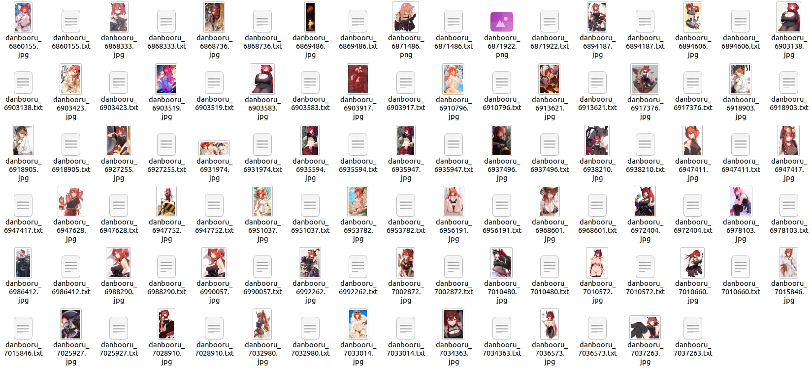

I Need to Dynamically Design the Processing Flow
We can encapsulate the construction process of a data source within a function and return the generated data source as the function’s result.
For example, the following code demonstrates how to use a function to construct a rough dataset for a waifu:
1from waifuc.action import NoMonochromeAction, ClassFilterAction, TaggingAction
2from waifuc.source import DanbooruSource
3
4
5def get_waifu_dataset(her_name: str, drop_monochrome_images: bool = True,
6 solo_only: bool = True, illustration_only: bool = False,
7 no_character_tag: bool = True, n_images: int = 50):
8 """
9 Get a waifu dataset source based on specified criteria.
10
11 :param her_name: Name of the waifu character.
12 :type her_name: str
13 :param drop_monochrome_images: Whether to exclude monochrome images.
14 :type drop_monochrome_images: bool
15 :param solo_only: Whether to include only solo images.
16 :type solo_only: bool
17 :param illustration_only: Whether to include only images classified as illustrations.
18 :type illustration_only: bool
19 :param no_character_tag: Whether to exclude images with character tags.
20 :type no_character_tag: bool
21 :param n_images: Number of images you need. 'None' means you need all the images.
22 :type n_images: int
23 :return: Waifu dataset source with specified criteria.
24 :rtype: DanbooruSource
25 """
26 if solo_only:
27 # Use the solo tag, only solo images will be included
28 source = DanbooruSource([her_name, 'solo'])
29 else:
30 # Don't use the solo tag, include all images
31 source = DanbooruSource([her_name])
32
33 if drop_monochrome_images:
34 # Drop monochrome images
35 source = source.attach(NoMonochromeAction())
36 if illustration_only:
37 # Only use illustration images
38 source = source.attach(ClassFilterAction(['illustration']))
39
40 if no_character_tag:
41 # Drop the character tags
42 source = source.attach(TaggingAction(character_threshold=1.01))
43 else:
44 # Keep all the tags
45 source = source.attach(TaggingAction())
46
47 if n_images is not None:
48 source = source[:n_images]
49 return source
You can obtain different datasets by adjusting the function’s parameters, like this:
1from waifuc.export import TextualInversionExporter
2
3get_waifu_dataset(
4 'surtr_(arknights)',
5 drop_monochrome_images=True,
6 solo_only=True,
7 no_character_tag=False,
8 n_images=50,
9).export(TextualInversionExporter('test_safety'))
This will give you a dataset like the one shown below:
Similarly, you can directly integrate data exporting into the function, like this:
1from waifuc.export import TextualInversionExporter
2
3
4def get_waifu_dataset(her_name: str, save_dir: str, drop_monochrome_images: bool = True,
5 solo_only: bool = True, illustration_only: bool = False,
6 no_character_tag: bool = True, n_images: int = 50):
7 # -----------------------------
8 # Create your source here ...
9 # -----------------------------
10
11 source.export(TextualInversionExporter(save_dir))